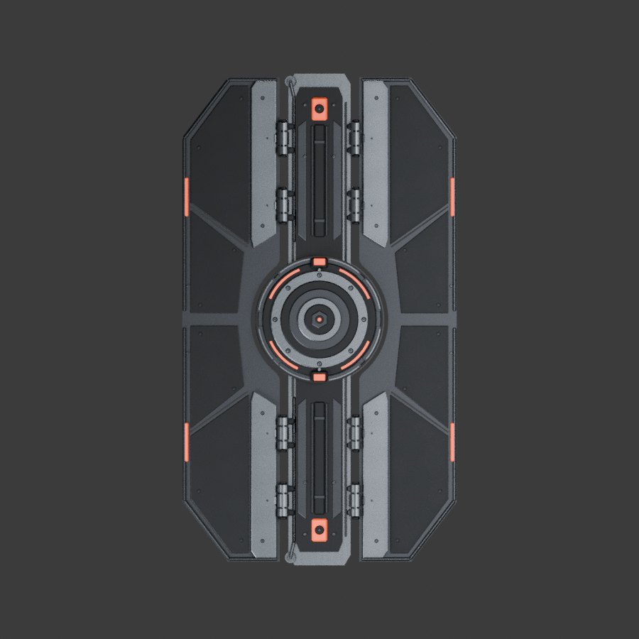
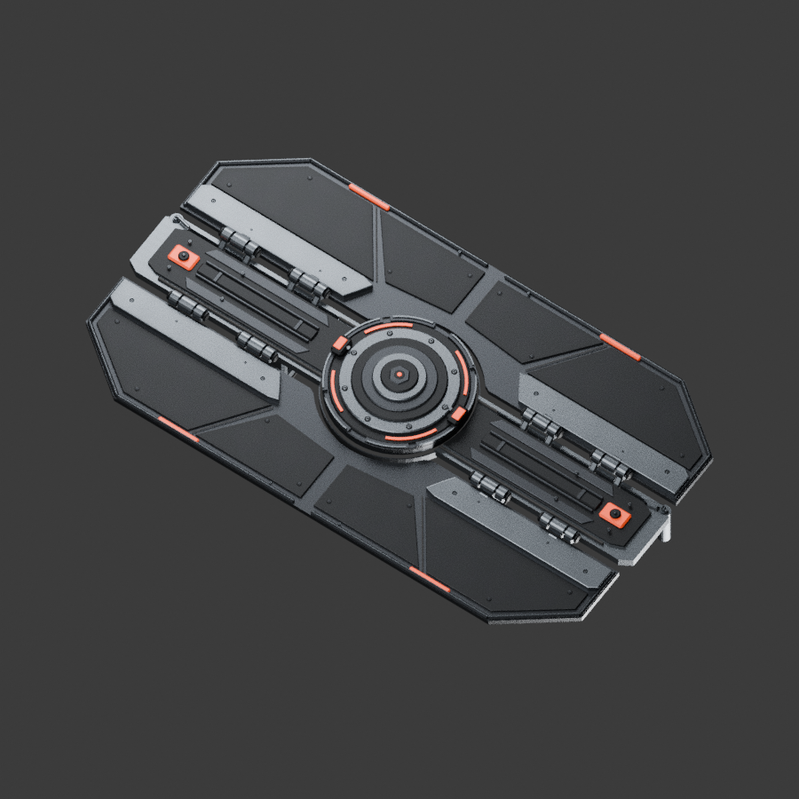
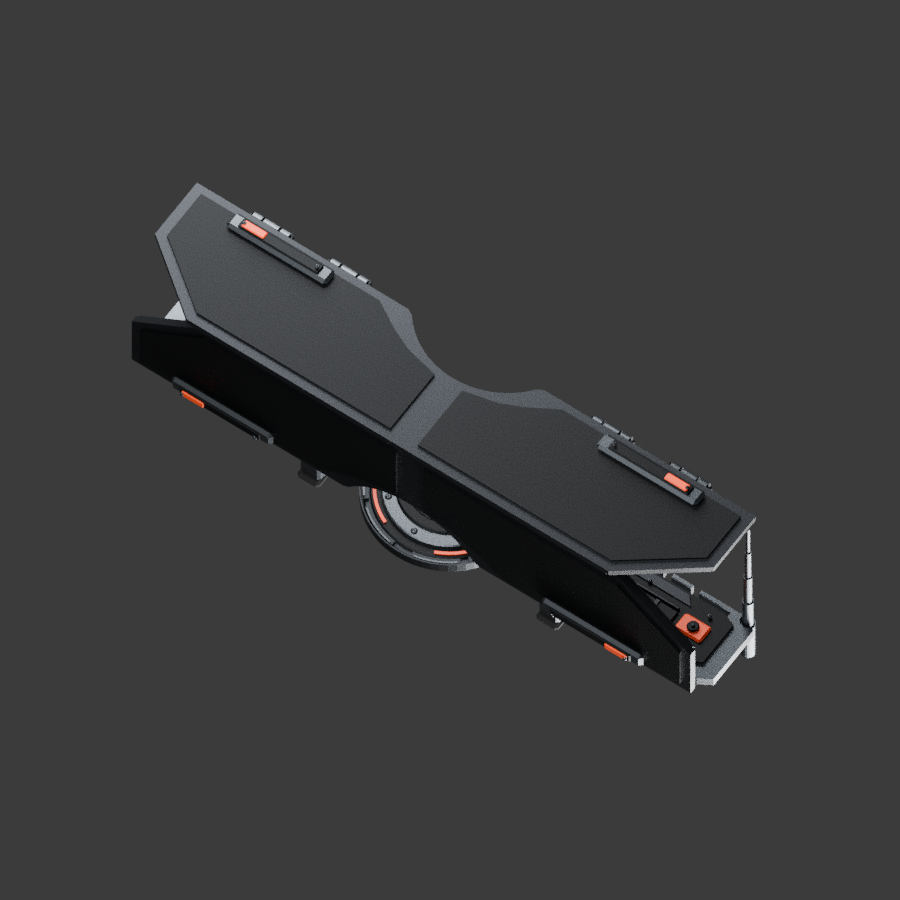
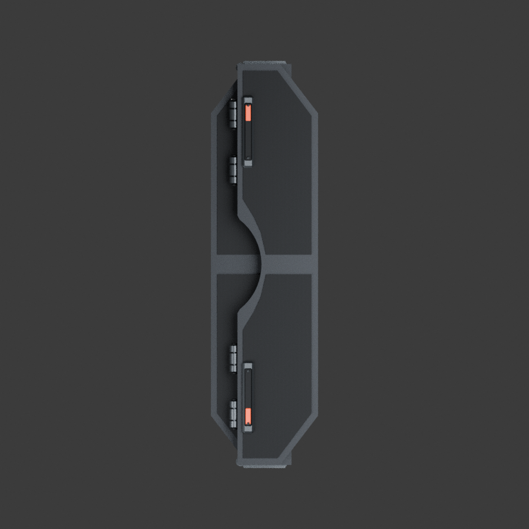
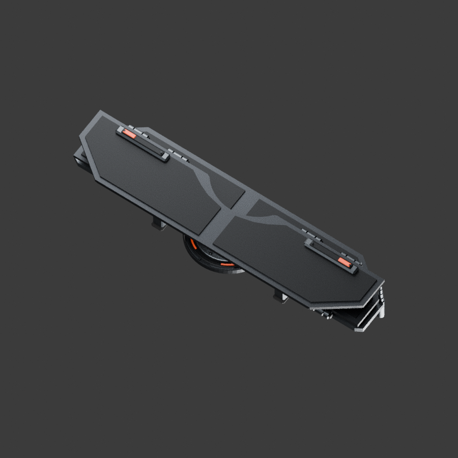
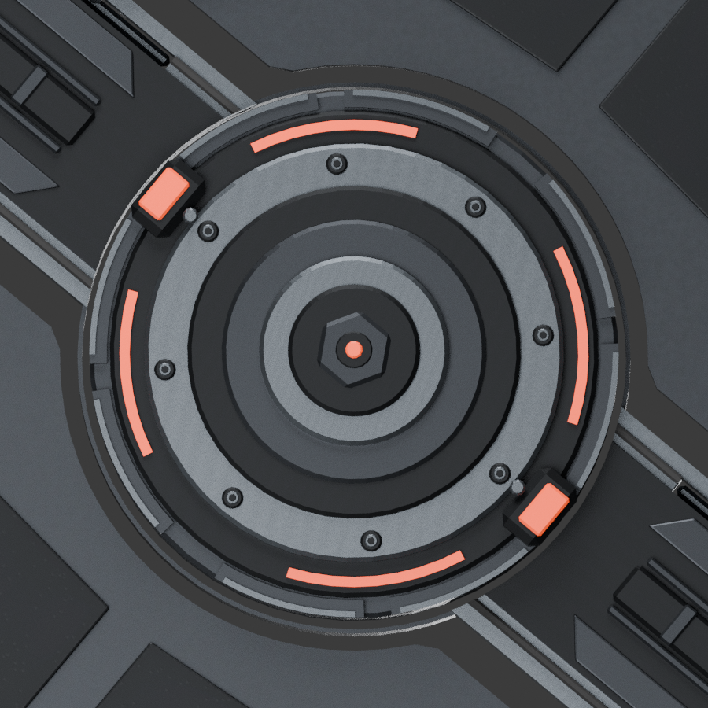
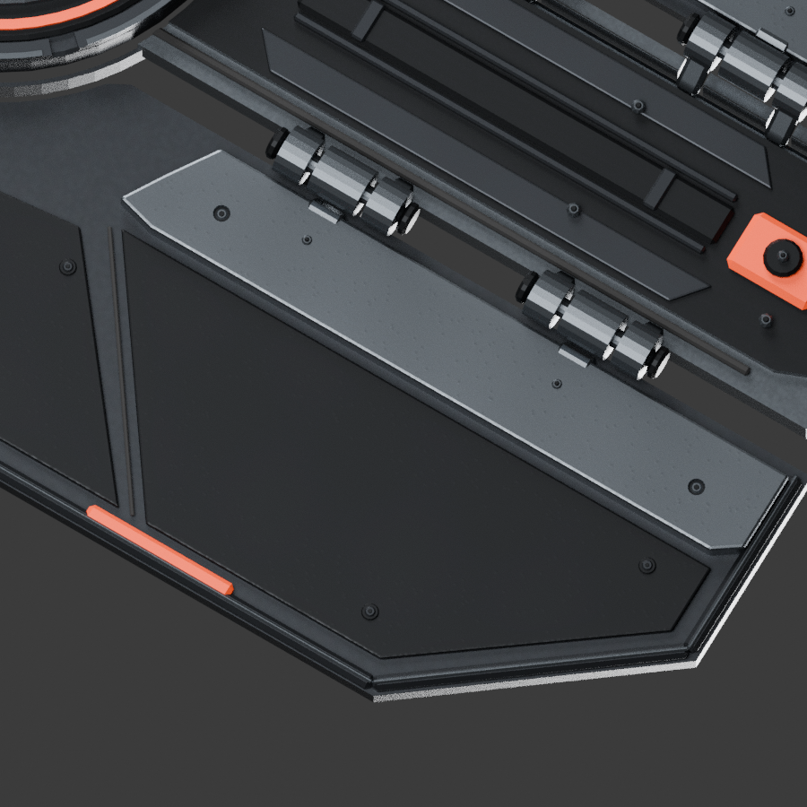
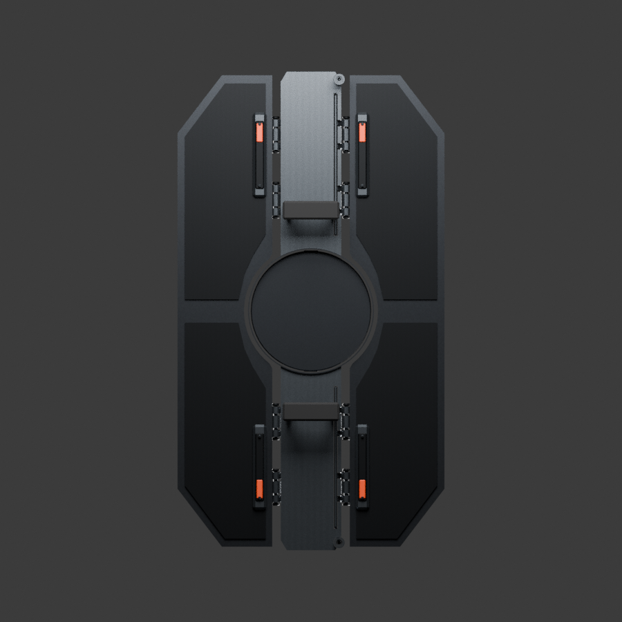
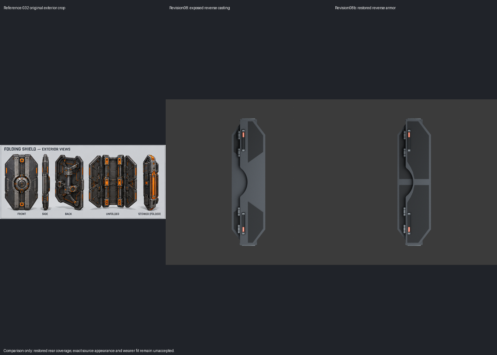

Actual modeled geometry. Original reference032 is unchanged. No final art acceptance or wearer fit certification. Dimensions: deployed 53 × 95 cm; stowed 25 × 95 cm, excluding animation sweep.
Revision08b restores separate broad reverse-armor outlines after revision08 exposed excessive bare casting in stowed views. Source matching and final art acceptance remain open.








